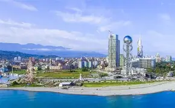

- ბაკურიანი
- ქობულეთი
- ურეკი
ბათუმი
ბათუმი — ქალაქი და მუნიციპალიტეტი[5] საქართველოში, არის აჭარის ავტონომიური რესპუბლიკის ადმინისტრაციული ცენტრი. ბათუმი არის მოსახლეობის რაოდენობით მეორე ქალაქი საქართველოში და ყველაზე დიდი ქალაქი დასავლეთ საქართველოში, მსხვილი საერთაშორისო ნავსადგური შავი ზღვის სამხრეთ-აღმოსავლეთ სანაპიროზე, მნიშვნელოვანი სამრეწველო, კულტურული და ტურისტული ცენტრი. ბათუმი გაშენებულია ღრმა, კარგად დაცული ბუნებრივი ნავსაყუდელის ბათუმის ყურის ნაპირას, ზღვის დონიდან 3 მეტრზე, თბილისიდან 350 კმ-ში (რკინიგზით)
